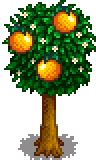
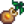
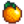
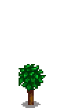
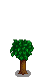
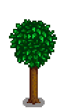
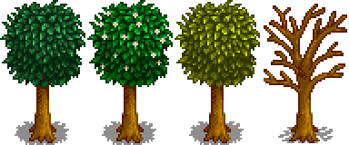

Orange Tree
| Orange Tree | |
 | |
| Information | |
| Sapling: |  Orange Sapling |
| Sapling Price: | |
| Produce: |  Orange |
| Growth Time: | 28 days |
| Harvest Season: | |
The Orange Tree is a type of fruit tree. It takes 28 days to grow to maturity, after which it will produce one Orange each day during the Summer. It can only grow in the center of a 3x3 square, each square of which must be kept completely clear of objects, flooring, and terrain features (including grass). The 3x3 grid must not overlap the 3x3 grid of another Fruit Tree.
For each full year after maturing, fruit trees will produce higher quality fruit, up to iridium star quality after three years. Note that the 3x3 square around the tree doesn't have to be kept clear once the tree has fully grown.
If struck by lightning during a storm, a fruit tree will produce Coal for 4 days instead of fruit.
Fruit trees can be planted in the Greenhouse.
Stages of Growth
| Stage 1 | Stage 2 | Stage 3 | Stage 4 | Stage 5 - Spring, Summer, Fall, Winter |
|---|---|---|---|---|
 |
 |
 |
 | |
| 7 Days | 7 Days | 7 Days | 7 Days | Total: 28 Days |
Gallery
History
- 1.4: 3x3 grid no longer needs to be kept clear for tree fruit to mature to iridium quality.
- 1.6: Will now yield an Orange Sapling of corresponding quality when cut down.
| Trees | |
|---|---|
| Trees | Green Rain Trees • Mahogany Tree • Maple Tree • Mushroom Tree • Mystic Tree • Oak Tree • Palm Tree • Pine Tree |
| Fruit Trees | Apple Tree • Apricot Tree • Banana Tree • Cherry Tree • Mango Tree • Orange Tree • Peach Tree • Pomegranate Tree |
| Seeds | Acorn • Mahogany Seed • Maple Seed • Mossy Seed • Mushroom Tree Seed • Pine Cone • Mystic Tree Seed |
| Fruit | Apple • Apricot • Banana • Cherry • Mango • Orange • Peach • Pomegranate |
| Misc | Large Log • Large Stump • Tea Bush |